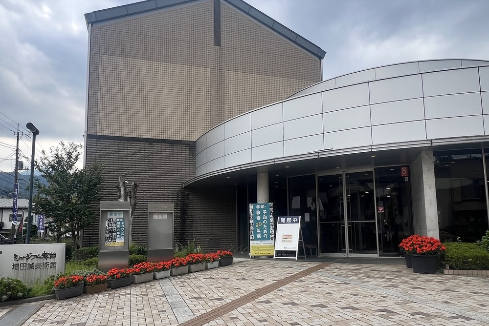

Witness a Real Samurai Procession!
On September 7th, step into the age of the samurai. The main event is the Daimyo Gyoretsu, a stunning recreation of a feudal lord's procession with warriors in authentic armor. And here's a special secret: one of the magnificent draperies you'll see on the festival floats, the "Tiger" drapery, was designed by the legendary artist Katsushika Hokusai himself!
Daimyo Procession Schedule
3:50 PM
Date: September 7th
Start Point: Museum Tsuru
Discover a Cultural Treasure, Just a 5-Minute Walk from the Festival
After witnessing the powerful Daimyo Gyoretsu, step into Museum Tsuru to see the artifacts behind the spectacle. The centerpiece is the magnificent "Tiger" drapery, and here is the most amazing part: this is the authentic drapery that is still used in the town's festival today.
You are not just looking at a museum piece; you are seeing a living piece of history up close. The preliminary design for this powerful artwork was drawn by the legendary ukiyo-e master, Katsushika Hokusai, who signed it with his unique name, "Gakyōjin Hokusai" – The Man Mad About Art.
This treasure is a testament to the town's prosperous past as a center for luxurious Kaiki silk weaving. The museum also holds Jomon period pottery, artifacts from Japan's prehistoric era.
See the real, Hokusai-designed festival treasure up close, and explore centuries of history—all completely for free in a quiet, authentic setting.
Experience the Festival in Action
Easy to Access
Directions:
Only 30 minutes from Kawaguchiko (Mt. Fuji Station)!
- From Shinjuku/Tokyo: Take the JR Chuo Line to Otsuki Station, then transfer to the Fujikyu Line and get off at Tsurushi Station. (Approx. 90 mins)
- From Kawaguchiko: Take the Fujikyu Line and get off at Tsurushi Station. (Approx. 25 mins)
- From Tsurushi Station: The museum is a 3-minute walk. The festival area is also nearby.
Museum Hours:
9:00 AM - 4:30 PM